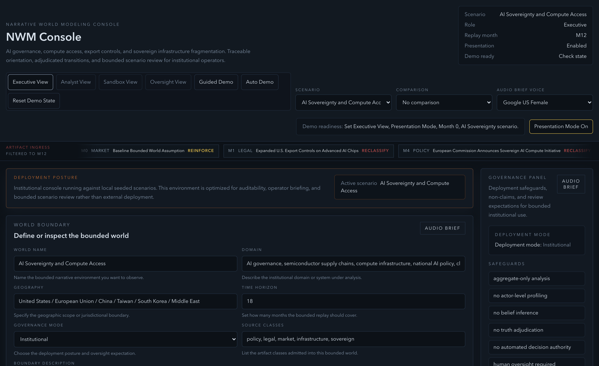
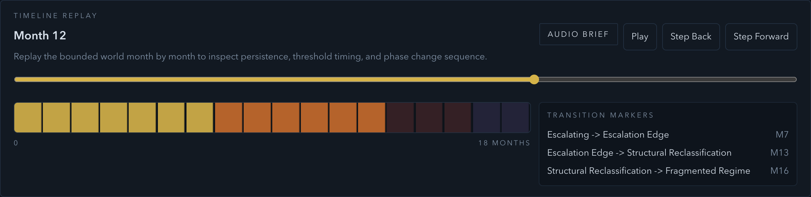

The Missing Layer in Institutional Decision-Making
Institutions already fund data, software, and expert analysis. They still lack a governed system that turns fragmented signal into decision-grade narrative judgment.
Investor Read
How the Engine Works
From fragmented signals to governed system state
Capture real-world inputs across markets, policy, institutions, and media.
Continuously gathers high-volume, multi-source signals.Translate unstructured information into consistent, comparable inputs.
Standardizes inputs into a unified analytical framework.Map signals into a live representation of the environment.
Maintains a real-time view of system conditions.Identify when the system is stable, building pressure, or changing regime.
Detects meaningful shifts before they become obvious.Deliver clear, auditable insights for decision-makers.
Produces structured, traceable outputs for leadership.Clear Product Outputs
Positioning
Institutions Have More Data Than Decision Clarity
Large organizations already have the data. The failure is turning that data into a shared strategic view quickly enough to support high-stakes decisions.
What Breaks Today
- Signals sit across research tools, analyst notes, internal reports, and outside advisors.
- Different teams tell different stories about the same situation.
- Leadership spends too much time aligning on what is happening before deciding what to do.
- Slow interpretation leads to delay, missed shifts, and costly reversals.
Institutional Pain Points
Why It Matters
Current Tools Stop Short of Decision-Making
Dashboards surface data. Consultants sell episodic judgment. Generic AI generates text. None computes a governed strategic state.
Competitive Read
Why the Current Stack Breaks
A Scenario Planning Platform for Institutions
Inception Gate works like an AI Bloomberg for strategists, but its category-defining difference is the engine that turns fragmented signal into computable narrative state.
Platform Architecture
Clear Positioning
- Scenario planning platform for institutions.
- Built for strategy, risk, intelligence, and executive teams.
- Core technology tracks how narratives form, spread, fragment, sediment, and dissolve.
How Information Moves Through the Platform
Teams start on a live operating surface, move through time, and convert that read into briefs, scenarios, and alerts.
Landing Surface

Time Replay and Workflow

What Customers Actually Receive
The value is not more content. It is a governed strategic read that converts fragmented inputs into a quantified narrative-state signal before consensus framing catches up.
NWM Signal | Iran Energy System Entering Compression Window (30-90 Days)
Iran is one example. The same narrative-state system tracks high-leverage environments across geopolitics, regulation, supply chains, markets, and institutional risk formation.
System Readout
This is analogous to an AI Bloomberg terminal for high-leverage narrative environments: not just showing movement, but computing what it means, what sustains it, and what changes the read.
Who Buys First
The first buyer is the leader already accountable for explaining uncertainty to executives, investment committees, or boards.
Initial Customer Segments
Likely First Buyer
GTM and Pricing
GTM is how the company wins and grows accounts. Inception Gate lands in one budget-owning strategy or risk team, proves value in a live planning workflow, and expands into adjacent leadership functions.
Commercial Model
Customer Segments and GTM
Land, Prove Value, Expand
The sales motion is straightforward: land in one high-stakes workflow, replace manual synthesis, prove value in leadership cadence, and expand across the institution.
Sales Motion
What Value Looks Like
- Leadership briefing cycles compress from days into hours.
- Teams align around one operating picture instead of debating source material.
- Scenario changes are logged, reusable, and easier to defend.
- Important shifts trigger immediate alerts and a defined follow-up path.
Budget Already Exists
This is not a new budget category. Institutions already spend on research, risk tools, consulting, and analyst time. Inception Gate consolidates that spend into one decision platform.
Bottom-Up Account Logic
Budget Sources
Why Customers Stay
Defensibility starts with a patent-pending model of narrative state and compounds through traceable workflow, decision memory, and embedded institutional use.
Defensibility Layers
Why It Is Inherently Different
- Competes on governed interpretation, not generic text generation.
- Produces a traceable strategic state, not isolated answers.
- Maintains scenario logic across teams and time, not just prompt history.
- Becomes system infrastructure for planning under uncertainty.
What We Need to Prove Before Series A
Seed capital is for product maturity and early revenue proof. Series A requires repeatable deployment, strong retention, and expansion inside customer accounts.
Build Path
18-24 Month Proof
- 5-8 paid institutional customers
- $2M-$4M ARR with strong retention
- Reference accounts with visible leadership usage
- Expansion from single-workflow deployments into multi-team use
How the $6M Seed Is Deployed
$6M buys product depth, source coverage, first-account conversion, and the delivery layer required to retain institutional customers.
Allocation
What That Capital Unlocks
Why This Founder
The founder insight is simple: institutions do not lack information. They lack a system for converting signal into shared judgment under pressure.